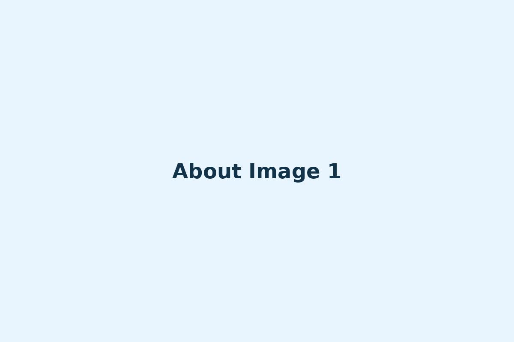
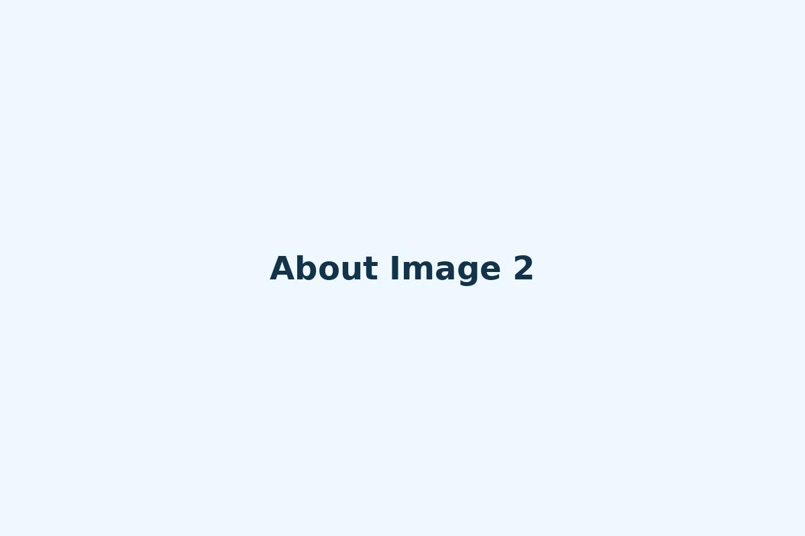

About DreamDrop
DreamDrop is a community-powered donation movement that transforms small daily savings into meaningful impact. Anyone can join.
Mission & Vision
Mission: To inspire everyday giving by encouraging small contributions that help feed the hungry.
Vision: A world where small daily acts of kindness create life-changing impact.
Our Journey
2023 — The Idea
DreamDrop was born from a simple thought: small savings can change lives.
2024 — Community
People from all walks of life joined the movement to fight hunger.
2025 — The Growth
DreamDrop expanded to donations, volunteers, piggy banks & impact tracking.